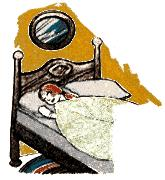
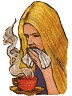

Mothers Herb Garden: Mullein
September/October 1980
Lately, more and more people have begun to understand just how limited-in both variety and nutritional value-our "modern" diets hove become. This realization has sparked a new and widespread interest in the culinary and therapeutic uses of herbs . . . those plants which a lthough not well-known today-were, just one short generation ago, honored "guests" on the dinner tables and in the medicine chests of our grandparents' homes. In this regular feature, MOTHER examines the availability, cultivation, and benefits of our "forgotten" veget able foods and rem edies . . . and-we hope-helps pre vent the loss of still another bit of an cestral lore.
Mullein (Verbascum thapsus) may be known to you by one or more of its 30 common names. (Among them are velvet dock, Aaron's rod, Adam's flannel, Jacob's staff, blanket leaf, cow's lungwort, candlewick, feltwort, hare's beard, and flannel flower.)
This Mediterranean native-which can be found in fields, in pastures, and along roadsides all across the U.S.-was well-known to the early Greeks, who made lamp wicks from its dried leaves . . . and to the ancient Romans, who dipped its dried stalk in tallow to produce funeral torches. Pliny noted that "figs do not putrefy at all that are wrapped in mullein leaves", and Roman ladies reportedly used an infusion of the herb's flowers to add a golden tinge to their tresses.
(If you'd like to try such a hair rinse, boil just 3 to 4 tablespoons of dried mullein blossoms in a pint of water for 20 to 30 minutes, and strain the blooms out when the mixture is cool. After shampooing, pour or brush the rinse through your hair repeatedly until the desired shade is reached.)
Though officially known as a weed, this prolific biennial is the herb of St. Fiacre-the Irish patron saint of horticulturists-and is a handsome garden or landscape addition. The plant-stout, erect, and growing up to seven feet tall-has large, pale green, spear-shaped leaves covered with a yellowish white velvety matting. Its straight stem is topped by a long, dense spike of yellow sessile flowers-with orange stamensthat bloom from June to September. The blossoms have a faint, pleasant scent that's attractive to bees.
Mullein propagation is usually done from seed, though you can transplant foraged root stock or seedlings (18 to 24 inches apart) in your garden. If you're unable to find wild mullein, the following firms carry the seeds: Otto Richter & Sons, Ltd., Dept. TMEN, Goodwood, Ontario, Canada L0C 1A0 (packet 75 cents, catalog 7511) . . . Casa Yerba, Dept. TMEN, Star Route 2, Box 21, Day's Creek, Oregon 97429 (packet 50 cents, catalog $1.00) . . . Borchelt Herb Gardens, Dept. TMEN, 474 Carriage Shop Road, East Falmouth, Massachusetts 02536 (packet 60 cents , catalog SASE).
During its first year, the young plant will produce only a rosette of downy leaves, followed-the second summer-by the long flowering stalk. (Young rosettes make beautiful bases for larger flower arrangements.) Mullein prefers chalky soil and a sunny position, but will flourish almost anywhere. However, because of its height, the herb should be either staked or sheltered from the wind. Once established, it'll perpetuate itself by self-sowing.
Although not useful as a food, mullein (which is reportedly an antispasmodic, diuretic, expectorant, demulcent, astringent, sedative, and a nonnarcotic pain killer) has, throughout history, been used in many medicinal applications. Its dried leaves have been smoked, burned as incense, and used in steam vapor to relieve lung congestion. A fresh leaf, when wrapped around a bleeding finger, makes a fine emergency bandage, and-in Appalachia-colds are commonly treated with mullein tea.
The flowers, if steeped in olive oil for about three weeks, produce an ointment that has been used to treat frostbite, chapped skin, hemorrhoids, and earache . . . and is said to remove rough warts if applied as a poultice.
The plant's foliage can also serve as blotters, toilet paper, containers for vegetables when cooking in a fire pit, and "gloves" when gathering such thorny herbs as stinging nettles. In pioneer days girls in the Midwest rubbed their faces with mullein "fur" to bring a rosy flush to their cheeks, and-even today-children find that the big leaves make excellent blankets for doll beds!
 Mullein leaves make great doll blankets. |
 Colds are treated with mullein tea. |
 |